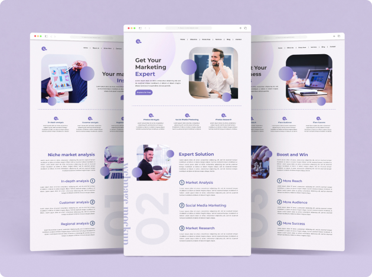

I design clear, usable and visually polished interfaces for web platforms, SaaS products and enterprise systems, with 7+ years of hands-on UX/UI experience.
My UX/UI work starts with understanding the user problem and ends with an interface developers can build with confidence. In between: user research, user flows, information architecture, wireframes, low- and high-fidelity prototypes, interaction design and final UI, all designed responsively and reviewed for usability and accessibility. Most of my work has been on dashboards, admin panels and CRM, ERP and HRMS-style products, where clarity and structure matter as much as visual polish.
Research first, then structure, then visuals. I learn how users actually work, map their flows and organise the information before a single high-fidelity screen exists. Wireframes and prototypes test direction early, and the final UI is built on a design system so it stays consistent as the product grows. After handoff I review the build with developers and refine.
Deliverables typically include user flows, information architecture, wireframes, clickable prototypes, final responsive UI, a component-based design system and organised handoff files with specs and interaction notes. Tools: Figma for design, prototyping and handoff.

Common questions about how I approach interface design work.
Web platforms, SaaS products, dashboards, admin panels and CRM, ERP and HRMS-style systems. Data-heavy, workflow-driven screens are where I have spent most of my time, alongside consumer-facing web interfaces.
The whole path. I start with user research and problem understanding, move through flows, information architecture and wireframes, and only then design the high-fidelity UI. The visual layer is built on that foundation.
Every layout is designed for desktop, tablet and mobile from the start, with component behaviour defined per breakpoint. I check contrast, hierarchy, focus states and readability so the interface works for more people, not only on ideal screens.
Yes. I create reusable components with typography, colour and spacing rules so the product stays consistent, new screens are faster to design and implementation is easier for developers.
Organised Figma files, clear specs, interaction notes and prototypes where needed. I stay available during development to answer questions and review the build against the design.